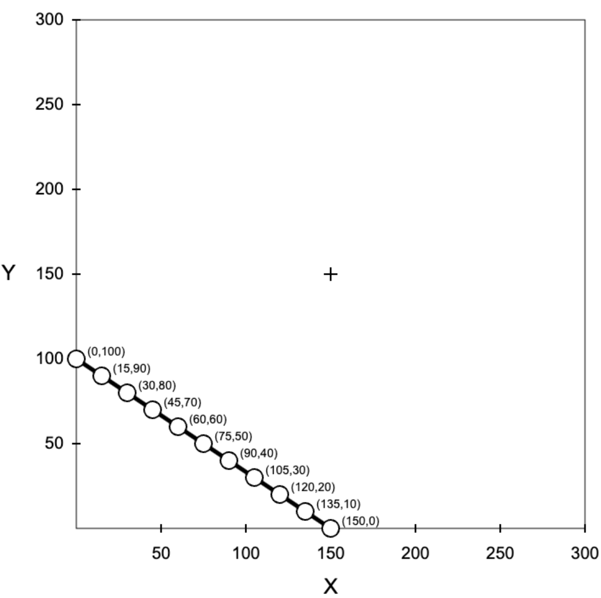

<!DOCTYPE html>
<html>
  <head>
    <title>My experiment</title>
    <meta name="viewport" content="width=device-width, initial-scale=1.0, maximum-scale=1.0, user-scalable=no">

    <script src="https://unpkg.com/jspsych@7.3.4"></script>
    <script src="https://unpkg.com/@jspsych/plugin-html-keyboard-response@1.1.3"></script>
    <link href="https://unpkg.com/jspsych@7.3.4/css/jspsych.css" rel="stylesheet" type="text/css" />
    <script src="https://unpkg.com/@jspsych/plugin-html-button-response@1.1.3"></script>
    <script src="https://unpkg.com/@jspsych/plugin-resize@1.0.3"></script>
    <script src="https://unpkg.com/@jspsych/plugin-canvas-button-response@1.1.3"></script>
    <script src="https://unpkg.com/@jspsych/plugin-survey-html-form@1.0.3"></script>
    <script src="https://unpkg.com/@jspsych/plugin-survey-multi-choice@1.1.3"></script>
    <script src="https://unpkg.com/@jspsych/plugin-canvas-keyboard-response@1.1.3"></script>
    <script src="https://unpkg.com/@jspsych/plugin-instructions@1.1.4"></script>
    <script src="https://unpkg.com/@jspsych/extension-mouse-tracking@1.0.3"></script>
    <script src="https://unpkg.com/@jspsych/plugin-survey-text@1.1.3"></script>

  <style>

   .container {
    display: flex;
    justify-content: center; 
    
   } 

   .Text_side {
    flex: 1;
    text-align: justify;
    text-justify: inter-word;
    max-width: 500px;
    margin-right: 30px;  
   }

   .image {
    flex: 1;
    display: flex;
    justify-content: flex-end;
    max-width: 600px
   }

   .image img {
    max-width: 100%; 
    max-height: 100%; 
   }

   .Text {
    
    P{
      text-align: justify;
      max-width: 1000px;
    }
    em {
      text-align: center;
      

    }
   };
  
  
  </style>
  </head>
  <body>  
  </body>

  <script>
    //==============================//
    //    Section 1: Variables      //
    //------------------------------//

    const a1 = [[0,84],[17,76],[34,67],[56,56],[67,50],[84,42],[101,34],[118,25],[134,17],[151,8],[168,0]]
    const a2 = [[0,54],[20,49],[43,43],[65,38],[86,32],[108,27],[130,22],[151,16],[173,11],[194,5],[216,0]]
    const a3 = [[0,225],[15,203],[30,180],[45,158],[60,135],[75,113],[90,90],[105,68],[120,45],[135,23],[150,0]]
    const a4 = [[0,111],[18,101],[36,91],[54,81],[71,71],[92,59],[117,45],[137,33],[156,22],[176,11],[195,0]]
    const a5 = [[0,108],[15,96],[29,85],[46,71],[60,60],[71,52],[81,43],[95,32],[108,22],[122,11],[135,0]]
    const a6 = [[0,270],[6,243],[12,216],[18,189],[24,162],[30,135],[36,108],[43,78],[49,49],[55,24],[60,0]]
    const a7 = [[0,150],[23,135],[45,120],[68,105],[90,90],[113,75],[135,60],[158,45],[180,30],[203,15],[225,0]]
    const a8 = [[0,165],[17,149],[33,132],[50,116],[66,99],[83,83],[99,66],[116,50],[132,33],[149,17],[165,0]]
    const a9 = [[0,102],[26,92],[51,82],[73,73],[102,61],[128,51],[153,41],[179,31],[204,20],[230,10],[255,0]]
    const a10 = [[0,168],[8,151],[17,134],[25,118],[34,101],[42,84],[50,67],[56,56],[67,34],[76,17],[84,0]]
    const a11 = [[0,216],[5,194],[11,173],[16,151],[22,130],[27,108],[32,86],[38,65],[43,43],[49,20],[54,0]]
    const a12 = [[0,255],[10,230],[20,204],[31,179],[41,153],[51,128],[61,102],[73,73],[82,51],[92,26],[102,0]]
    const a13 = [[0,90],[33,79],[68,68],[90,60],[111,53],[135,45],[162,36],[189,27],[216,18],[243,9],[270,0]]
    const a14 = [[0,270],[9,243],[18,216],[27,189],[36,162],[45,135],[53,111],[60,90],[68,68],[79,33],[90,0]]
    const a15 = [[0,60],[24,55],[49,49],[78,43],[108,36],[135,30],[162,24],[189,18],[216,12],[243,6],[270,0]]
    const a16 = [[0,195],[11,176],[22,156],[33,137],[45,117],[59,92],[71,71],[81,54],[91,36],[101,18],[111,0]]
    const a17 = [[0,135],[11,122],[22,108],[32,95],[43,81],[52,71],[60,60],[71,46],[85,29],[96,15],[108,0]]
    const a18 = [[0,58],[23,53],[48,48],[80,42],[115,35],[144,29],[173,23],[202,17],[230,12],[259,6],[288,0]]
    const a19 = [[0,288],[6,259],[12,230],[17,202],[23,173],[29,144],[35,115],[42,80],[48,48],[53,23],[58,0]]
    const a20 = [[0,195],[20,176],[39,156],[59,137],[78,117],[98,98],[117,78],[137,59],[156,39],[176,20],[195,0]]
    const aa = [a1,a2,a3 ,a4,a5,a6,a7,a8,a9,a10,a11,a12,a13,a14,a15,a16,a17,a18,a19,a20]
    const aa2 = ['a1','a2','a3','a4','a5','a6','a7','a8','a9','a10','a11','a12','a13','a14','a15','a16','a17','a18','a19','a20']

    const ex1 = [[0, 100],[15, 90],[30, 80],[45, 70],[60, 60],[75, 50],[90, 40],[105, 30],[120, 20],[135, 10], [150, 0]]
    const ex2 = [[0, 140], [7, 126], [14, 112], [21, 98], [28, 84], [35, 70], [42, 56], [47, 47], [56, 28], [63, 14], [70, 0]]
    const ex_aa = [ex1,ex2]
    const ex_aa2 = ['ex1','ex2']

    var current_choice = [0,0];
    var realized_outcome = null;
    var realized_outcome_end = [];
    var totalscore = null;
    var scale = null;
    var choicesA = [];
    var slope_1 = 0;
    var slope = 0;
    var start_time = null;
    var which_array = null;
    var which_array_2 = null;
    var whichtrial = null;
    var payment = 0;
    var rt_bundles = null;
    
    positions = [];

    //==============================//
    // Section 2: Change-Parameters //
    //------------------------------//
    // which type of experiment (1,2,3,4,5,6)
    const which_set = 1;
    //for random manipulation
    //const which_set = Math.floor(Math.random() * 6) + 1;
    
    // time intervals for mousetracking in ms
    const time_intervals = 12;

    if (which_set <= 3){
      var text_var = 'Some options are highlighted with a pink color, indicating that some participants in another study looked at those options relatively longer.'
      var text_var_questions ="<strong>Why are some dots/options highlighted?</strong>"

    } else {
      var text_var = 'You will see arrow(s) on the screen, pointing to the options that were looked at relatively longer by some participants in another study.'
      var text_var_questions ="<strong>What do the arrow(s) pointing to some dots/options indicate?</strong>"
    
    };
    
    //==============================//
    //     Section 3: Functions     //
    //------------------------------//

    //========================================//
    //  Section 3.1: Graphs and Interaction   //
    //----------------------------------------//

    function graph(canvas, array) {
      var ctx = canvas.getContext("2d");
      
     
      /* Rectangle */
      ctx.beginPath();
      ctx.lineWidth = "1";
      ctx.strokeStyle = "black";
      ctx.rect(100,100,600,600);
      ctx.stroke();
      
      slope_decision(array);
      
      drawCross(ctx);
      drawAxisLinesAndNumbers(ctx);
      budgetline(canvas, array);

      start_time = new Date().getTime();
      var choicechecker = [0,0];
      var rect = canvas.getBoundingClientRect(); 
      let scheduled = null;
      
      // Mousetracking

      canvas.addEventListener('mousemove', function(event) {
        var rect = canvas.getBoundingClientRect(); 
          if (!scheduled) {
            setTimeout(function(){
              var mousetrack_x = ((event.clientX - rect.left)/scale-100)/2; 
              var mousetrack_y = (700-(event.clientY - rect.top)/scale)/2; 
              var current_time = (new Date().getTime());
              var time_el = current_time-start_time;
              positions.push({x: mousetrack_x, y: mousetrack_y, t: time_el });
              
              scheduled = null;
            },time_intervals);
          }
          scheduled = event;
            
          });

      // Choose Option with Clicking

      canvas.addEventListener("click", function(event) {
        var rect = canvas.getBoundingClientRect(); 
        var mouseX = (event.clientX - rect.left)/scale;
        var mouseY = (event.clientY - rect.top)/scale;
    
        for (let sub of array) {
          var xsub = 100+(2*sub[0]);
          var ysub = 700-(2*sub[1]);
          
            var distance = Math.sqrt(Math.pow(mouseX - xsub, 2) + Math.pow(mouseY - ysub, 2));
            if (distance <= 10) {
                current_choice = [sub[0],sub[1]];
                
                choicecolor(ctx,array);
                var arraychoicechecker = arraysAreEqual(choicechecker,current_choice)
                if (arraychoicechecker == true) {
                  var rt_current_time = (new Date().getTime());
                  rt_bundles = rt_current_time-start_time;
                  jsPsych.finishTrial()
                  break;
                  
                };
                choicesA.push(current_choice);
                choicechecker = current_choice;
                current_choice = [0,0];

                break;
            }
        }
       });
       
    }

    function drawAxisLinesAndNumbers(ctx) {
      ctx.font = "25px Arial"
      ctx.textAlign = "center";
      ctx.textBaseline ="middle";
    
      ctx.fillText('Y', 20,400);
      ctx.fillText('X', 400, 770);

      ctx.font = "20px Arial";

      for (let i = 1; i <= 6; i++) {
          ctx.fillText(i * 50, 100 + i * 100, 730);
          ctx.beginPath();
          ctx.moveTo(100 + i * 100, 695);
          ctx.lineTo(100 + i * 100, 705);
          ctx.stroke();
      }

      ctx.textAlign = "end";
      for (let i = 1; i <= 6; i++) {
          
          ctx.fillText(i * 50, 85, 700 - i * 100);
          ctx.beginPath();
          ctx.moveTo(95, 700 - i * 100);
          ctx.lineTo(105, 700 - i * 100);
          ctx.stroke();
      }
    }

    function drawCross(ctx) {
      ctx.beginPath();
      ctx.moveTo(392, 400);
      ctx.lineTo(408, 400);
      ctx.lineWidth = 2;
      ctx.stroke();

      ctx.beginPath();
      ctx.moveTo(400, 392);
      ctx.lineTo(400, 408);
      ctx.stroke(); 
    }

    function budgetline(canvas, array) {
      var ctx = canvas.getContext("2d");

      var startx = 100+(2*array[0][0]);
      var starty = 700-(2*array[0][1]);
      var endx = 100+(2*array[10][0]);
      var endy = 700-(2*array[10][1]);
      
      /*line*/
      ctx.beginPath();
      ctx.moveTo(startx,starty);
      ctx.lineTo(endx,endy);
      ctx.lineWidth = 5;
      ctx.stroke();
      
      /* circle + text */
      for (let sub of array) {
        var xcord = 100+(2*sub[0]);
        var ycord = 700-(2*sub[1]);
       
        ctx.beginPath();
        ctx.arc(xcord,ycord,10,0,2*Math.PI);
        ctx.fillStyle = 'white';
        ctx.fillRect(xcord+13,ycord-15,45,14);

        if (which_set < 4) {
          attention_mani(ctx,array,sub);
        }
        
        
        ctx.fill();
        ctx.lineWidth = 2;
        ctx.stroke();

        if (which_set > 3) {
          attention_mani(ctx,array,sub);
        }

        ctx.textAlign = "start";
        ctx.textBaseline ="bottom"
        ctx.font = "14px Arial";
        ctx.fillStyle = 'black';
        ctx.fillText("("+sub[0]+","+sub[1]+")" ,(xcord+13), ycord-1); 
      }
    }

    function choicecolor(ctx,array) {
      for (let sub of array) {
        var xcord = 100+(2*sub[0]);
        var ycord = 700-(2*sub[1]);
        ctx.beginPath();
        ctx.arc(xcord,ycord,10,0,2*Math.PI);
        var checker = arraysAreEqual(sub,current_choice);
        if (checker == true) {
          ctx.fillStyle = "black";
        } else if (which_set < 4) {
          attention_mani(ctx,array,sub);
        } else 
        ctx.fillStyle = 'white';
        ctx.fill();
        ctx.lineWidth = 2;
        ctx.stroke();

        ctx.fillStyle = 'white';
      }
    }

    //==========================================//
    //   Section 3.2: Attention Manipulation    //
    //------------------------------------------//

    function attention_mani(ctx,array,sub)  {
      if (which_set == 1) {
        exo_valid_Style(ctx,array,sub);
      }
      if (which_set == 2) {
        exo_invalid_Style(ctx,array,sub);
      }
      if (which_set == 3) {
        exo_neutral_Style(ctx,array,sub);
      }
      if (which_set == 4) {
        endo_valid_Style(ctx,array,sub);
      }
      if (which_set == 5) {
        endo_invalid_Style(ctx,array,sub);
      }
      if (which_set == 6) {
        endo_neutral_Style(ctx,array,sub);
      }

    }

    function exo_valid_Style(ctx,array,sub) {
  
      if (slope < 1 || (slope ==1 && slope_1 == 1)) {
          if (sub[0] > sub[1]) {
            ctx.fillStyle = 'DeepPink';
          } else {
            ctx.fillStyle = 'white';
          }
        
        } else if (slope > 1 || (slope ==1 && slope_1 == 2)) {
          if (sub[0] < sub[1]) {
            ctx.fillStyle = 'DeepPink';
          
          } else {
            ctx.fillStyle = 'white';
          }
        } 
    }

    function exo_invalid_Style(ctx,array,sub) { 
  
      if (slope > 1 || (slope ==1 && slope_1 == 1)) {
          if (sub[0] > sub[1] ) {
            ctx.fillStyle = 'DeepPink';
          } else {
            ctx.fillStyle = 'white';
          }
        
        } else if (slope < 1 || (slope ==1 && slope_1 == 2)) {
          if (sub[0] < sub[1]) {
            ctx.fillStyle = 'DeepPink';
          
          } else {
            ctx.fillStyle = 'white';
          }
        } 
    }

    function exo_neutral_Style(ctx,array,sub) {
        ctx.fillStyle = 'DeepPink';
    }

    function endo_valid_Style(ctx,array){
      
      var xyas = transform_func(ctx,array);

      ctx.save();
      ctx.translate(xyas[0],xyas[1]);
      
      if (xyas[3] < 1 || (xyas[3] ==1 && slope_1 == 1)) {
        ctx.rotate(xyas[2]);
        drawArrow(ctx);   
      }

      if (xyas[3] > 1 || (xyas[3] ==1 && slope_1 == 2)) {
        ctx.rotate(xyas[2]+Math.PI);
        drawArrow(ctx);
      }

      ctx.restore();
    }

    function endo_invalid_Style(ctx,array){
      
      var xyas = transform_func(ctx,array);

      ctx.save();
      ctx.translate(xyas[0],xyas[1]);
      
      if (xyas[3] > 1|| (xyas[3] ==1 && slope_1 == 1)) {
        ctx.rotate(xyas[2]);
        drawArrow(ctx);   
      }

      if (xyas[3] < 1|| (xyas[3] ==1 && slope_1 == 2)) {
        ctx.rotate(xyas[2]+Math.PI);
        drawArrow(ctx);
      }

      ctx.restore();
    }

    function endo_neutral_Style(ctx,array){
      
      var xyas = transform_func(ctx,array);

      ctx.save();
      ctx.translate(xyas[0],xyas[1]);
      
      ctx.rotate(xyas[2]);
      drawArrow(ctx) ; 

      ctx.rotate(Math.PI);
      drawArrow(ctx);
      
      ctx.restore();
    }

  function transform_func(ctx,array) {
    var a = Math.atan(slope)
    var transform = array[0][1]/(1+slope)
    if (slope > 3) {

      var x = 100+(2*transform)-35;
      var y = 700-(2*transform)+5;

    } else if (slope <=3 && slope>= 2) {

      var x = 100+(2*transform)-30;
      var y = 700-(2*transform)+10;

    } else if (slope <2 && slope>1) {

      var x = 100+(2*transform)-25;
      var y = 700-(2*transform)+15;

    } else if (slope ==1 ) {

      var x = 100+(2*transform)-30;
      var y = 700-(2*transform)+22;

    } else if (slope ==0.8) {

      var x = 100+(2*transform)-30;
      var y = 700-(2*transform)+28;

    } else if (slope <0.8 && slope>0.5) {

      var x = 100+(2*transform)-20;
      var y = 700-(2*transform)+22;

    } else if (slope <=0.5 && slope>0.25 ) {
      var x = 100+(2*transform)-20;
      var y = 700-(2*transform)+32;

    } else {

      var x = 100+(2*transform)-10;
      var y = 700-(2*transform)+30;

    }

    return [x, y, a, slope]
  }

    function drawArrow(ctx){
      ctx.beginPath();
      ctx.moveTo(2,0);
      ctx.lineTo(2,-10);
      ctx.lineTo(45,-10);
      ctx.lineTo(45,-15);
      ctx.lineTo(60,0);
      ctx.lineTo(45,15);
      ctx.lineTo(45,10);
      ctx.lineTo(2,10);
      ctx.lineTo(2,0);
      ctx.fillStyle = 'black';
      ctx.fill();
      ctx.stroke();
    }

    //===========================//
    //   Section 3.3: Others    //
    //---------------------------//

    function arraysAreEqual(array1, array2) {
      for (let i = 0; i < array1.length; i++) {
          if (array1[i] !== array2[i]) {
              return false;
          }
      }
      return true;
    }

    function getRandomValue(array) {
      var random = Math.random();

      if (random < 0.5) {
        return array[0];
      } else {
        return array[1];
      }
    }

    function slope_1_decision(){
      var random_slope = Math.random();

      if (random_slope < 0.5) {
          slope_1 = 1; 
      } else {
          slope_1 = 2;
       }
    }

    function slope_decision(array){
      slope = array[0][1]/array[10][0];

      if (slope == 1){
        if (which_array==null || which_array_2==null){
          if (slope_1 == 0){
            slope_1_decision();
            which_array = [array[0][1],slope_1];
          }
          else if (slope_1 == 1){
            slope_1 = 2;
            which_array_2 = [array[0][1],slope_1];
          }
          else if (slope_1 == 2){
            slope_1 = 1;
            which_array_2 = [array[0][1],slope_1];
          }
        } 
        else if (which_array[0]==array[0][1]) {
          slope_1 = which_array[1];
        }
        else if (which_array_2[0]==array[0][1]) {
          slope_1 = which_array_2[1];

        }
      }
    }

    function fixation_duration_func(){
      var time_fixation  = new Date().getTime();
        
        new_time = 18000-(time_fixation-start_time);
      
        if (new_time >0) {
          return new_time;
        } else {
          return 0;
        } 
    }

    
    //===========================//
    //   Section 4: JSPsych      //
    //---------------------------//
    
    var jsPsych = initJsPsych({
        on_finish: function(){   

            jsPsych.data.get().localSave('csv', 'trial1.csv')
        }   
    });
 
    var start = {
        type: jsPsychHtmlButtonResponse,
        stimulus: 'Start the decision problem task',
        choices: ['Continue'],
        margin_vertical: '20px',
        on_finish: function () {

              jsPsych.data.addProperties({
                  which_manipulation_bundles: which_set,
                  
              });
          }        
    };
    
    var inputs = {
      type: jsPsychResize,
      item_width: 3 + 3/8,
      item_height: 2 + 1/8,
      prompt: "<p>Click and drag the lower right corner of the box until the box is the same size as a credit card held up to the screen.</p>",
     pixels_per_unit: 130,
     on_finish: function(data){
        scale = data.scale_factor
      }
    };
    
    //=======================================//
    //    Section 4.1: Sociodemographics     //
    //---------------------------------------//
  
    var sociodemographics = {
      timeline: [{
          type: jsPsychSurveyMultiChoice,
          questions: [
              {
                  prompt: "What is your gender?",
                  name: 'Gender',
                  options: ['Female', 'Male', 'Other'],
                  required: true
              },
              {
                  prompt: "Are you left-handed, right-handed, or ambidextrous? ",
                  name: 'Handedness',
                  options: ['Left', 'Right', 'Ambidextrous'],
                  required: true
              }
          ],
          randomize_question_order: true,
          on_finish: function () {
              var gender = jsPsych.data.get().trials[2].response.Gender
              var handedness = jsPsych.data.get().trials[2].response.Handedness

              jsPsych.data.addProperties({
                  gender: gender,
                  handedness: handedness
              });
          }
      },
      {
          type: jsPsychSurveyText,
          questions: [
              { prompt: 'What is your year of birth?', name: 'year', placeholder: 'yyyy', required: true },
              { prompt: 'What is your current occupation?', name: 'occupation', required: true },
              { prompt: 'What is your Subject ID?', name: 'ID_test', placeholder: '###', required: true },
             
          ],
          on_finish: function () {
              var birth_year = jsPsych.data.get().trials[3].response.year
              var occupation = jsPsych.data.get().trials[3].response.occupation
              var ID_test = jsPsych.data.get().trials[3].response.ID_test
             

              jsPsych.data.addProperties({
                  birth_year: birth_year,
                  occupation: occupation,
                  ID_test: ID_test,
                  
              });
          }
      }],
    }
  

    //=========================================================//
    //  Section 4.2: Instructions and Comprehension Questions  //
    //---------------------------------------------------------//
    
    var instructions = {
      type: jsPsychInstructions,
      pages: ["<div class='container'> <div class='Text_side'> <p>In this task, you will participate in several independent decision problems that follow a common format (see an example on the right side):</p> <p>In each decision problem, you will be asked to choose one option out of 11 options for distributing points between two accounts, called the X-account and the Y-account. After your choice the computer will randomly select one of the two accounts. Each option (X, Y) indicates the amount of points you will receive if the X-account (the horizontal axis) is selected and the amount of points you will receive if the Y-account (the vertical axis) is selected. The received points translate into a potential payout. </p> <p> For instance, in the sample picture, the third option from the left (30, 80) indicates that you will earn 30 points if the X-axis is chosen and 80 points if the Y-axis is chosen. Both the X-account and the Y-account have an equal chance of being selected.</p> </div> <div class='image'>  </div> </div>",

      "<div class='container'> <div class='Text_side'> <p> Another example: selecting an option like (60, 60), the fifth choice from the left, guarantees you 60 points since both accounts offer the same amount. This choice is referred to as the <i>safest option</i>. </p> <p>On the other hand, if you choose the Y-intercept (0, 100), you will receive either 0 points or 100 points with equal probability. And if you choose the X-intercept, you will receive either 150 points or 0 points. We call these kinds of options the <i>riskiest options</i>, where you can get either nothing or lots of money.</p> <p> <strong> BUT! </strong> When you decide to choose a corner option, please examine thoroughly because it is possible one of the options would be clearly better than the other.</p>  </div> <div class='image'> </img> </div> </div>",

      "<div class='Text'> <p> "+ text_var +"</p><p> In each decision problem, you are encouraged to examine all 11 options along the line and choose the option you like the most. You can navigate between options with a MOUSE click. <strong> To confirm your choice, just click on the selected option again.</strong> </p> <p>You will have <strong>15 seconds</strong> to make your choice for each decision problem. The total time of this task is independent of how fast you give your answer for each decision problem. The next decision problem will be displayed always after 15 seconds. So, it is best to think very carefully about each decision problem before responding. </p> <p>At the end of the experiment, one decision problem will be randomly selected by the computer. The total number of points you earned from this task will be converted into Swiss Francs at a given rate. </p> <p> Note that if the computer selects a decision problem in which you failed to answer within the 15-second time limit, you will get no points from this task. Thus, it is in your own best interest to give as many valid answers as possible. In the selected problem, the X account or the Y account will be randomly chosen to be realized with equal probability. Therefore, every decision determines your earnings.</p> <em>If you press NEXT you will proceed to the comprehension questions</em></div>"

      ],

      show_clickable_nav: true,
      show_page_number: true,

    };

    var comprehension_questions = {
      type: jsPsychSurveyMultiChoice,
      questions: jsPsych.timelineVariable('questions'),
      
      preamble: '<p style="font-size:25px">Comprehension Questions</p>',
      data: { 
                questions_a: jsPsych.timelineVariable('questions_for_text'), correct_response: jsPsych.timelineVariable('correct_response')
            },
      on_finish: function(data) {
                var acc = false;
          
                if (data.correct_response == Object.values(data.response)) {
                    acc = true;
                }
                data.accuracy = acc;
               
            }
    };

    var feedback_questions = {
      type: jsPsychHtmlButtonResponse,
      stimulus: function() {
          var feedback_text = '<span style="font-size:30px;color:red;">Incorrect</span>';
          var last_trial_accuracy = jsPsych.data.getLastTrialData().values()[0].accuracy; 
          if (last_trial_accuracy == true) {
             feedback_text = '<span style="font-size:30px;color:green;">Correct!</span>'
           }
          var feedback_text_correct_response = jsPsych.data.getLastTrialData().values()[0].correct_response;
          var feedback_text_questions_for_text = jsPsych.data.getLastTrialData().values()[0].questions_a;
          return feedback_text +'<br><br>'+ feedback_text_questions_for_text + '<p> The correct answer was: </p>' + feedback_text_correct_response;
          },
          choices: ['Continue'],
          margin_vertical: '20px'
    }

    var comprehension_questions_info = [
     {questions: [{
          prompt: "<strong>What happens if you select the option (30, 105)?</strong>", 
          options: ['At the end of the experiment, I will receive 30 points from the X account and 105 points from the Y account so I will have 135 points in total for sure.', 'At the end of the experiment, if this decision problem is selected, I will win either 30 points or 105 points.'], 
          required: true,
          
        }],
      questions_for_text: '<strong>What happens if you select the option (30, 105)?</strong>',
      correct_response: 'At the end of the experiment, if this decision problem is selected, I will win either 30 points or 105 points.' }, 

      {questions: [{
          prompt: "<strong>If I do not confirm an option within 15 seconds, what happens if this decision problem is selected at the end of the experiment? </strong>",  
          options: ['The computer will randomly determine one option for me. So, I will still get some points from this task', 'I will earn no points from this task'], 
          required: true,
          
        }],
      questions_for_text: '<strong>If I do not confirm an option within 15 seconds, what happens if this decision problem is selected at the end of the experiment?</strong>',
      correct_response: 'I will earn no points from this task'}, 

     {questions: [{
          prompt: text_var_questions,  
          options: ['Those are the options that were looked at longer by some people in another study', 'Those are the options that were more likely chosen by the computer at the end of the experiment.'], 
          required: true,
          
        }],
      questions_for_text: text_var_questions, 
      correct_response: 'Those are the options that were looked at longer by some people in another study'}
    ];

    var comprehension_questions_procedure = {
        timeline: [comprehension_questions, feedback_questions],
        timeline_variables: comprehension_questions_info,
        randomize_order: true
   }

   //==================================================//
   //    Section 4.3: Example and Decision Problems    //
   //--------------------------------------------------//

    var square = {
      type: jsPsychCanvasKeyboardResponse,
      stimulus: jsPsych.timelineVariable('stimulus'),
      canvas_size: [800, 800],
      choices: ['NO_KEYS'],
      data:{graph_number: jsPsych.timelineVariable('graph_number')},
      post_trial_gap: 0,
      trial_duration: 15000,
      on_finish: function(data){
        
        data.rt = rt_bundles
        
        if ((slope==1) && (which_set!=3)&&(which_set!=6)){
          if (slope_1==1){
          data.slope_1 = "down";
        } else  {
          data.slope_1 = "top";
        }} else {
          data.slope_1 = null;
        }

        var option_chosen = true;
        if (arraysAreEqual(current_choice,[0,0])) {
          option_chosen = false;
        }   
             
        data.option_chosen = option_chosen;
        data.choices = choicesA;
        data.finalchoice = current_choice;

        realized_outcome = getRandomValue(current_choice);
        data.realized_outcome = realized_outcome;
        realized_outcome_end.push(realized_outcome);

        data.mouseposition = positions;

        current_choice = [0,0];
        choicesA = [];
        positions = [];
        rt_bundles = null;
      }
    };
    
    var feedback = {
      type: jsPsychHtmlKeyboardResponse,
      stimulus: function(){
        var last_trial_choice = jsPsych.data.getLastTrialData().values()[0].finalchoice;
        
        return  'Your choice: ' +last_trial_choice 
              
        },
      choices: ['NO_KEYS'],
      trial_duration: 3000,   
    };

    var fixation_point = {
      type: jsPsychCanvasKeyboardResponse,
      stimulus: function(c){
        var ctx = c.getContext("2d")
        drawCross(ctx)
      },
      canvas_size: [800, 800],
      choices: ['NO_KEYS'],
      trial_duration: fixation_duration_func,  
    };

    var examplestart = {
      type: jsPsychHtmlKeyboardResponse,
      stimulus: 'Now you will have practice with two example decision problems',
      trial_duration: 3000,
      choices: ['NO_KEYS'],
    };

    var feedback_example = {
      type: jsPsychHtmlButtonResponse,
      stimulus: function(){
        
        var example_choice = jsPsych.data.get().last(3).values()[0].finalchoice;

        if (arraysAreEqual(example_choice,[0,0])) {
          return "You haven't selected/confirmed an option. Remember to choose an option before the 15 seconds are over and <strong>confirm it by clicking on the selected option/dot again.</strong>";
        } else {
          return "Perfect, you have chosen your desired option. In case you didn't intend to select this option, remember that clicking on the same dot/option <strong>twice</strong> will confirm your choice.";
        }       
        },

      margin_vertical: '20px',
      choices: ['Continue'],      
    };
 
    var example_info = [];

    for (let i = 0; i < ex_aa.length; i++) {
      var example_i = {stimulus: function(c) {
        graph(c,ex_aa[i])
        }, graph_number: ex_aa2[i] }
      example_info.push(example_i)
    };

    var example = {
      timeline: [square,feedback, fixation_point, feedback_example],
      timeline_variables: example_info,
    };
    
    var trial_start = {
      type: jsPsychHtmlButtonResponse,
      stimulus: "The experiment will now begin. You cannot pause or stop the experiment, so please make sure you won't be disturbed for the next 12 minutes.",
      margin_vertical: '20px',
      choices: ['Continue'],
    };

    var trial_info = [];

    for (let i = 0; i < aa.length; i++) {
      var n = {stimulus: function(c) {
        graph(c,aa[i])
        }, graph_number: aa2[i] }
      trial_info.push(n)
    };
   
    var graph_proc = {
      timeline: [square,feedback,fixation_point],
      timeline_variables: trial_info,
      randomize_order: true,  
    };
    
    var graph_proc_2 = {
      timeline: [square,feedback,fixation_point],
      timeline_variables: trial_info,
      randomize_order: true,
    };

    var endscreen = {
      type: jsPsychHtmlButtonResponse,
      stimulus: function() {
        whichtrial = Math.floor(Math.random()*40) + 2
        console.log(whichtrial,realized_outcome_end)
        payment = realized_outcome_end[whichtrial]
        console.log(realized_outcome_end[whichtrial])
        return /*'The realized outcome of the decision problem randomly selected is: ' + payment + '<br><br> '+*/'Your whole payment is: ' +(8.7 + 0.1* payment) + ' CHF' +'<br> <br> Thank you for completing this task'
      },
      choices: ['Continue'],
      margin_vertical: '20px',
      on_finish: function(data){
        data.payment = 8.7 + 0.1*payment
      }
    };

    var timeline = [];

    timeline = timeline.concat(start);
    timeline = timeline.concat(inputs);
    timeline = timeline.concat(sociodemographics);
    timeline = timeline.concat(instructions);
    timeline = timeline.concat(comprehension_questions_procedure);
    timeline = timeline.concat(examplestart);
    timeline = timeline.concat(example);
    timeline = timeline.concat(trial_start);
    timeline = timeline.concat(graph_proc);
    timeline = timeline.concat(graph_proc_2);
    timeline = timeline.concat(endscreen);

    jsPsych.run(timeline);
    
  </script>
</html>